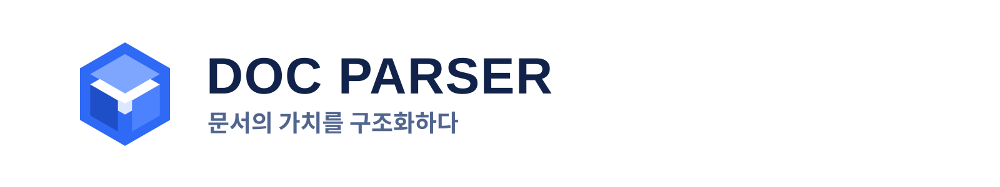
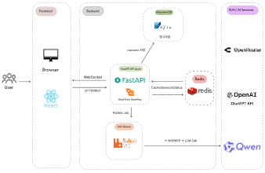

김동연 PM & Full Stack
프로젝트 일정 및 기능 기획
프론트엔드·백엔드 연동
전체 서비스 흐름 관리
@0yeonnnn0문서의 가치를 구조화하다

HWP, PDF, 스캔 이미지 등 문서를 단일 파이프라인으로 처리하고, 포맷 별 예외 케이스를 흡수합니다.
한국형 문서 구조를 인식·복원하고 핵심 실무 필드를 자동 추출해, 후속 업무 시스템에서 활용 가능한 정규화 규칙을 수립합니다.
RAG, LLM, 검색, 민원 처리, 정산 등 후속 시스템에서 즉시 사용할 수 있도록 구조화 출력 포맷을 표준화하고, API 연계 중심의 운영 가능한 데이터 인터페이스를 제공합니다.
HWP/HWPX, PDF, 이미지, Excel 문서를 업로드하면 VLM이 텍스트, 표, 이미지 요소를 추출해 .txt, 메타데이터, HTML/Markdown 표 형태로 변환합니다.
qwen_doc → qwen_infer → qwen_finalize 단계로 문서를 나눠 처리합니다. RTX 3090 기준으로 모델을 한 번 로딩하고, GPU 동시 추론 수를 제한해서 안정적으로 처리하는 구조입니다.
이미지를 TABLE, CHART, FLOWCHART, MATH, IMAGE로 분류하고 유형별 프롬프트로 구조화합니다. 특히 표는 HTML <table>과 Markdown 형태로 변환하는 기능이 핵심입니다.
변환된 문서를 chunk로 나누고 embedding 검색 후, 관련 문맥을 기반으로 질문에 답하는 구조입니다. 프론트에는 AI 채팅 UI도 연결되어 있습니다.
프로젝트 일정 및 기능 기획
프론트엔드·백엔드 연동
전체 서비스 흐름 관리
@0yeonnnn0
프론트엔드 화면 개발
문서 업로드 UI 구현
반응형 인터페이스 개선
@K-Dongjin
FastAPI 서버 개발
작업 상태 API 구현
데이터 처리 흐름 관리
@gahyeon1022
문서 처리 API 개발
Redis·RabbitMQ 연동
비동기 작업 안정화
@jun-kookmin
AI 파이프라인 연동
VLM 추론 로직 개발
Worker 처리 구조 설계
@seunG-Zzun
문서 분석 모델 실험
이미지·텍스트 추출 개선
결과 품질 평가
@kaye0ng
| Frontend |
|
|---|---|
| Backend |
|
| AI |
|
| Collaboration Tools |
|
Durmon:t의 Parser는 지금 배포되고 있습니다.
아래에서 확인해 보세요.